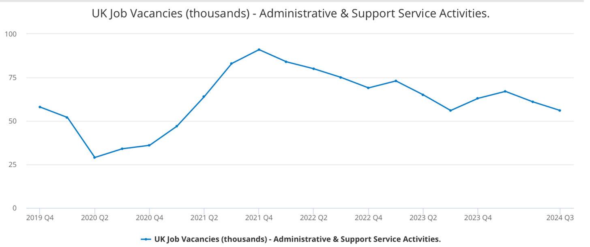

| Table of Contents |
|---|
| Abstract |
| Introduction |
| AI's Impact on Customer Service |
| AI's Impact on Manual Labour |
| AI's Impact on Administration |
| Conclusion |
| References |
This essay explores the effect artificial intelligence (AI) has on the job market, focusing on the customer service, manual labour, and administration sectors. AI has become comfortable with performing routine tasks without human intervention like with customer service chatbots. Due to AI’s efficiency, the manual labour sector has seen dramatic economic improvement with reduction in defects and manufacturing periods. In administration, Robotic Process Automation (RPA) is used for data management which allow workers to prioritise purposeful tasks. Companies view AI as a complement rather than replacement of human workers resulting in job requirement shifts that now prioritise soft skills which AI cannot do.
To fully understand the impact AI has we will be exploring how AI impacts each sector respectively; the extent of tasks AI can perform to benefits workers; then considering the potential of AI outperforming workers and the impact this may have on employment.
The ever-increasing capabilities of AI has led to its integration in the workplace and transforming it. It is said that “Artificial Intelligence has achieved super-human performance in some tasks” (Michaël Trazzi, 2020) which questions whether AI will compete with employees for their jobs due to its enhanced efficiency. Research has shown that AI will substitute human labour mostly in the service, production, and administration sectors (Mbali Mfanafuthi, 2019), potentially putting these workers at risk and altering the demand for these jobs.
The use of AI in customer service has changed how organisations connect with customers. The number of human calling agents used to deal with customer enquiries has decreased. This was evident in the Thai organisation CP All, which saw a 60% reduction in the call load, after implementing the conversational chatbot (Oliveri, 2024). This demonstrates AI’s capability of serving customers without human intervention, indicating that there’s a declining demand in customer service sector. This idea was reinforced when Facebook publicised that 66% percent of people would prefer to message rather than phone customer care (Chitra Krishnan, 2022).
To oppose this, AI chat boxes are often met with annoyance by customers as they fall short of expectation to fully understand their needs, with 70% deeming their interactions with chatbots as failures (Mengmeng Song a, 2022). This suggests that customers value human interaction in customer service meaning that exclusively relying on AI chatbots will not meet customer desires.
The labour market has experienced increased productivity after the implementation of AI such as automating assembly lines and on demand manufacturing (pwc, 2018). Due to the repetitive nature of these jobs, AI is easily able to perform these tasks and findings have shown that occupations have shifted from being routine and manual to being more interactive and analytical (Lordan, 2023). This is supported in a review of China’s manufacturing industry, where it was found that for every 1% rise in the use of robots, labour force jobs fell by 4.6% (Qingqing Huo, 2024). This clearly demonstrates the declining demand for manual labour in the job market, as it can be replaced by automation to optimize economic output and accelerate operations. The Chief Production and Technology Officer of Beko stated that the applications of AI has prevented defects in the production of sheet metal resulting in 12.5% material cost saving as well as cutting the defect rates by 66%. The advanced machine learning algorithms also reduced time to market by 46% (Schönfuß, 2024). These statistics confirm the economic benefits of applying AI and reducing human labour in the manufacturing process, however this introduces the risk to employment in the manual labour market.
In contrary, surveys have revealed that businesses are more motivated to adopt AI to complement human capabilities rather than substituting workers (Marguerita Lane, 2021). This suggests that complete AI automation in the manual labour market is highly unlikely due to the complexity and variability of certain tasks.
Comparing the computer to brain frequencies, our neurones can operate at a peak speed of 200Hz compared to a modern microprocessor’s speed of 2 GHz (Michaël Trazzi, 2020). This allows AI to handle time-consuming administration such as organising and managing data much faster which frees employees work on more engaging tasks. A Microsoft Work Trend Index Analysis revealed that 68% of employees who feel overwhelmed with their workload use AI to relieve this burden by automating repetitive tasks (Moffatt, 2024). This data suggests that jobs solely focussed on administrative tasks are especially vulnerable to the impact of AI due to the easily replicable processes the jobs contain. This type of AI is called Robotic process automation (RPA) which works by ‘deploying scripts which emulate human processes’ (IBM, 2024) such as extracting data from invoices and entering it into an accounting system. This process also results in fewer errors (Flatt, 2024) which allows companies to generate a higher return on investment (ROI) (IBM, 2024), in fact Deloitte reported an 82% increase in ROI from its AI adoption in an article which also stated that AI automation can reduce business costs 20% (Medium, 2024). This cost reduction is undoubtedly appealing for companies to switch to AI when it comes to administration Figure 1 (Office for National Statistics, 2024).
In contrary, employment trends for administrative roles indicate that positions remain in demand as seen in the graph above (Office for National Statistics, 2024). The 2020 decline was likely due to COVID-19 and in 2021 a rapid recovery was observed. From 2022 the number of vacancies gradually decreased leading to stabilisation in 2024, showing even with AI’s capabilities the administrative job market is still alive. However, employers are now seeking individuals who have soft skills like emotional intelligence and strong interpersonal skills (Winter, 2024), which are qualities that AI cannot replicate.
In conclusion, AI’s effect on the job market varies across sectors, depending on the skills required. Its most common use is automating repetitive tasks which are found in many fields, using systems like RPA. The growth of AI has created new roles however workers must develop the soft skills needed to fulfil this as every job requires human aspects which AI cannot fully replicate, therefore clarifying that AI will not eliminate jobs but instead reshape the existing ones. The demand in job markets which are heavily administrative may see a reduction due to its routine nature however this does not mean the administration sector is dying.